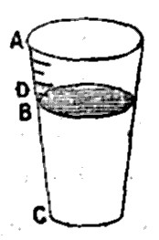

Chapter 40: Of The Tendency Of Profits To A Minimum¶
40.1 § 1. Different Theories as to the fall of Profits¶
The tendency of profits to fall as society advances, which has been brought to notice in the preceding chapter, was early recognized by writers on industry and commerce; but, the laws which govern profits not being then understood, the phenomenon was ascribed to a wrong cause. Adam Smith considered profits to be determined by what he called the competition of capital. In Adam Smith's opinion, the manner in which the competition of capital lowers profits is by lowering prices; that being usually the mode in which an increased investment of capital in any particular trade lowers the profits of that trade. But, if this was his meaning, he overlooked the circumstance that the fall of price, which, if confined to one commodity, really does lower the profits of the producer, ceases to have that effect as soon as it extends to all commodities; because, when all things have fallen, nothing has really fallen, except nominally; and, even computed in money, the expenses of every producer have diminished as much as his returns. Unless, indeed, labor be the one commodity which has not fallen in money price, when all other things have: if so, what has really taken place is a rise of wages; and it is that, and not the fall of prices, which has lowered the profits of capital. There is another thing which escaped the notice of Adam Smith; that the supposed universal fall of prices, through increased competition of capitals, is a thing which can not take place. Prices are not determined by the competition of the sellers only, but also by that of the buyers; by demand as well as supply. The demand which affects money prices consists of all the money in the hands of the community destined to be laid out in commodities; and, as long as the proportion of this to the commodities is not diminished, there is no fall of general prices. Now, howsoever capital may increase, and give rise to an increased production of commodities, a full share of the capital will be drawn to the business of producing or importing money, and the quantity of money will be augmented in an equal ratio with the quantity of commodities. For, if this were not the case, and if money, therefore, were, as the theory supposes, perpetually acquiring increased purchasing power, those who produced or imported it would obtain constantly increasing profits; and this could not happen without attracting labor and capital to that occupation from other employments. If a general fall of prices and increased value of money were really to occur, it could only be as a consequence of increased cost of production, from the gradual exhaustion of the mines.
It is not tenable, therefore, in theory, that the increase of capital produces, or tends to produce, a general decline of money prices. Neither is it true that any general decline of prices, as capital increased, has manifested itself in fact. The only things observed to fall in price with the progress of society are those in which there have been improvements in production, greater than have taken place in the production of the precious metals; as, for example, all spun and woven fabrics. Other things, again, instead of falling, have risen in price, because their cost of production, compared with that of gold and silver, has increased. Among these are all kinds of food, comparison being made with a much earlier period of history. The doctrine, therefore, that competition of capital lowers profits by lowering prices, is incorrect in fact, as well as unsound in principle.
Mr. Wakefield, in his Commentary on Adam Smith, and his important writings on Colonization, takes a much clearer view of the subject, and arrives, through a substantially correct series of deductions, at practical conclusions which appear to me just and important. Mr. Wakefield's explanation of the fall of profits is briefly this: Production is limited not solely by the quantity of capital and of labor, but also by the extent of the “field of employment.” The field of employment for capital is twofold: the land of the country, and the capacity of foreign markets to take its manufactured commodities. On a limited extent of land, only a limited quantity of capital can find employment at a profit. As the quantity of capital approaches this limit, profit falls; when the limit is attained, profit is annihilated, and can only be restored through an extension of the field of employment, either by the acquisition of fertile land, or by opening new markets in foreign countries, from which food and materials can be purchased with the products of domestic capital.1
40.2 § 2. What determines the minimum rate of Profit?¶
There is at every time and place some particular rate of profit which is the lowest that will induce the people of that country and time to accumulate savings, and to employ those savings productively. This minimum rate of profit varies according to circumstances. It depends on two elements: One is the strength of the effective desire of accumulation; the comparative estimate, made by the people of that place and era, of future interests when weighed against present. This element chiefly affects the inclination to save. The other element, which affects not so much the willingness to save as the disposition to employ savings productively, is the degree of security of capital engaged in industrial operations. In employing any funds which a person may possess as capital on his own account, or in lending it to others to be so employed, there is always some additional risk over and above that incurred by keeping it idle in his own custody. This extra risk is great in proportion as the general state of society is insecure: it may be equivalent to twenty, thirty, or fifty per cent, or to no more than one or two; something however, it must always be; and for this the expectation of profit must be sufficient to compensate.
There would be adequate motives for a certain amount of saving, even if capital yielded no profit. There would be an inducement to lay by in good times a provision for bad; to reserve something for sickness and infirmity, or as a means of leisure and independence in the latter part of life, or a help to children in the outset of it. Savings, however, which have only these ends in view, have not much tendency to increase the amount of capital permanently in existence. The savings by which an addition is made to the national capital usually emanate from the desire of persons to improve what is termed their condition in life, or to make a provision for children or others, independent of their exertions. Now, to the strength of these inclinations it makes a very material difference how much of the desired object can be effected by a given amount and duration of self-denial; which again depends on the rate of profit. And there is in every country some rate of profit below which persons in general will not find sufficient motive to save for the mere purpose of growing richer, or of leaving others better off than themselves. Any accumulation, therefore, by which the general capital is increased, requires as its necessary condition a certain rate of profit—a rate which an average person will deem to be an equivalent for abstinence, with the addition of a sufficient insurance against risk.
I have already observed that this minimum rate of profit, less than which is not consistent with the further increase of capital, is lower in some states of society than in others; and I may add that the kind of social progress characteristic of our present civilization tends to diminish it: (1.) In the first place, one of the acknowledged effects of that progress is an increase of general security. Destruction by wars and spoliation by private or public violence are less and less to be apprehended. The risks attending the investment of savings in productive employment require, therefore, a smaller rate of profit to compensate for them than was required a century ago, and will hereafter require less than at present. (2.) In the second place, it is also one of the consequences of civilization that mankind become less the slaves of the moment, and more habituated to carry their desires and purposes forward into a distant future. This increase of providence is a natural result of the increased assurance with which futurity can be looked forward to; and is, besides, favored by most of the influences which an industrial life exercises over the passions and inclinations of human nature. In proportion as life has fewer vicissitudes, as habits become more fixed, and great prizes are less and less to be hoped for by any other means than long perseverance, mankind become more willing to sacrifice present indulgence for future objects. But, though the minimum rate of profit is liable to vary, and though to specify exactly what it is would at any given time be impossible, such a minimum always exists; and, whether it be high or low, when once it is reached, no further increase of capital can for the present take place. The country has then attained what is known to political economists under the name of the stationary state.
40.3 § 3. In old and opulent countries, profits habitually near to the minimum¶
We now arrive at the fundamental proposition which this chapter is intended to inculcate. When a country has long possessed a large production, and a large net income to make savings from, and when, therefore, the means have long existed of making a great annual addition to capital (the country not having, like America, a large reserve of fertile land still unused), it is one of the characteristics of such a country that the rate of profit is habitually within, as it were, a hand's breadth of the minimum, and the country, therefore, on the very verge of the stationary state. My meaning is, that it would require but a short time to reduce profits to the minimum, if capital continued to increase at its present rate, and no circumstances having a tendency to raise the rate of profit occurred in the mean time.
In England, the ordinary rate of interest on government securities, in which the risk is next to nothing, may be estimated at a little more than three per cent: in all other investments, therefore, the interest or profit calculated upon (exclusively of what is properly a remuneration for talent or exertion) must be as much more than this amount as is equivalent to the degree of risk to which the capital is thought to be exposed. Let us suppose that in England even so small a net profit as one per cent, exclusive of insurance against risk, would constitute a sufficient inducement to save, but that less than this would not be a sufficient inducement. I now say that the mere continuance of the present annual increase of capital, if no circumstance occurred to counteract its effect, would suffice in a small number of years to reduce the rate of net profit to one per cent.
To fulfill the conditions of the hypothesis, we must suppose an entire cessation of the exportation of capital for foreign investment. We must suppose the entire savings of the community to be annually invested in really productive employment within the country itself, and no new channels opened by industrial inventions, or by a more extensive substitution of the best-known processes for inferior ones.
The difficulty in finding remunerative employment every year for so much new capital would not consist in any want of a market. If the new capital were duly shared among many varieties of employment, it would raise up a demand for its own produce, and there would be no cause why any part of that produce should remain longer on hand than formerly. What would really be, not merely difficult, but impossible, would be to employ this capital without submitting to a rapid reduction of the rate of profit.
As capital increased, population either would also increase, or it would not. If it did not, wages would rise, and a greater capital would be distributed in wages among the same number of laborers. There being no more labor than before, and no improvements to render the labor more efficient, there would not be any increase of the produce; and, as the capital, however largely increased, would only obtain the same gross return, the whole savings of each year would be exactly so much subtracted from the profits of the next and of every following year.

This can be illustrated by supposing that the whole capital is handed out to the producers in a vessel which is returned full at the end of the period of production with the original outlay, plus an advance called profit. B C represents the total outlay, A C the total produce, and A B the profit on B C. Now, since the conditions of production remain the same, the same number of laborers can produce, as before, no more than A C; even though in the second year some of last year's profit, represented by D B, is saved and added to the outlay by the capitalist. If D C is now the outlay of capital, the profit can only be A C, minus D C, or A D; that is, the profit of the second year is diminished by D B, exactly the amount of savings of the year before. And this would be repeated each successive year, each saving added to B C being “exactly so much subtracted from the profits of the next and of every following year.”
It is hardly necessary to say that in such circumstances profits would very soon fall to the point at which further increase of capital would cease. An augmentation of capital, much more rapid than that of population, must soon reach its extreme limit, unless accompanied by increased efficiency of labor (through inventions and discoveries, or improved mental and physical education), or unless some of the idle people, or of the unproductive laborers, became productive.
If population did increase with the increase of capital and in proportion to it, the fall of profits would still be inevitable. Increased population implies increased demand for agricultural produce. In the absence of industrial improvements, this demand can only be supplied at an increased cost of production, either by cultivating worse land, or by a more elaborate and costly cultivation of the land already under tillage. The cost of the laborer's subsistence is therefore increased, and, unless the laborer submits to a deterioration of his condition, profits must fall. In an old country like England, if, in addition to supposing all improvement in domestic agriculture suspended, we suppose that there is no increased production in foreign countries for the English market, the fall of profits would be very rapid. If both these avenues to an increased supply of food were closed, and population continued to increase, as it is said to do, at the rate of a thousand a day, all waste land which admits of cultivation in the existing state of knowledge would soon be cultivated, and the cost of production and price of food would be so increased that, if the laborers received the increased money wages necessary to compensate for their increased expenses, profits would very soon reach the minimum. The fall of profits would be retarded if money wages did not rise, or rose in a less degree; but the margin which can be gained by a deterioration of the laborers' condition is a very narrow one: in general, they can not bear much reduction; when they can, they have also a higher standard of necessary requirements, and will not. On the whole, therefore, we may assume that in such a country as England, if the present annual amount of savings were to continue, without any of the counteracting circumstances which now keep in check the natural influence of those savings in reducing profit, the rate of profit would speedily attain the minimum, and all further accumulation of capital would for the present cease.
Mr. Carey, on the other hand, asserts the existence of a law of increasing returns from land, and that, while wages are constantly increasing with the progress of society, there is a diminution in the rate of profit, although the increasing returns permit an increase of absolute, if not of proportional, profit. That is, although wages increase more in proportion than profit, there is still a larger gross amount to be divided among capitalists as profit, out of a larger product.
40.4 § 4. —prevented from reaching it by commercial revulsions¶
What, then, are these counteracting circumstances which, in the existing state of things, maintain a tolerably equal struggle against the downward tendency of profits, and prevent the great annual savings which take place in this country from depressing the rate of profit much nearer to that lowest point to which it is always tending, and which, left to itself, it would so promptly attain? The resisting agencies are of several kinds.
First among them is the waste of capital in periods of overtrading and rash speculation, and in the commercial revulsions by which such times are always followed. Mines are opened, railways or bridges made, and many other works of uncertain profit commenced, and in these enterprises much capital is sunk which yields either no return, or none adequate to the outlay. Factories are built and machinery erected beyond what the market requires, or can keep in employment. Even if they are kept in employment, the capital is no less sunk; it has been converted from circulating into fixed capital, and has ceased to have any influence on wages or profits. Besides this, there is a great unproductive consumption of capital during the stagnation which follows a period of general overtrading. Establishments are shut up, or kept working without any profit. Such are the effects of a commercial revulsion; and that such revulsions are almost periodical is a consequence of the very tendency of profits which we are considering. By the time a few years have passed over without a crisis, so much additional capital has been accumulated that it is no longer possible to invest it at the accustomed profit; all public securities rise to a high price, the rate of interest on the best mercantile security falls very low, and the complaint is general among persons in business that no money is to be made. But the diminished scale of all safe gains inclines persons to give a ready ear to any projects which hold out, though at the risk of loss, the hope of a higher rate of profit; and speculations ensue, which, with the subsequent revulsions, destroy, or transfer to foreigners, a considerable amount of capital, produce a temporary rise of interest and profit, make room for fresh accumulations, and the same round is recommenced.
This, doubtless, is one considerable cause which arrests profits in their descent to the minimum, by sweeping away from time to time a part of the accumulated mass by which they are forced down. But this is not, as might be inferred from the language of some writers, the principal cause. If it were, the capital of the country would not increase; but in England it does increase greatly and rapidly. This is shown by the increasing productiveness of almost all taxes, by the continual growth of all the signs of national wealth, and by the rapid increase of population, while the condition of the laborers certainly is not on the whole declining.2
40.5 § 5. —by improvements in Production¶
This brings us to the second of the counter-agencies, namely, improvements in production. These evidently have the effect of extending what Mr. Wakefield terms the field of employment, that is, they enable a greater amount of capital to be accumulated and employed without depressing the rate of profit; provided always that they do not raise, to a proportional extent, the habits and requirements of the laborer. If the laboring-class gain the full advantage of the increased cheapness, in other words, if money wages do not fall, profits are not raised, nor their fall retarded. But, if the laborers people up to the improvement in their condition, and so relapse to their previous state, profits will rise. All inventions which cheapen any of the things consumed by the laborers, unless their requirements are raised in an equivalent degree, in time lower money wages, and, by doing so, enable a greater capital to be accumulated and employed, before profits fall back to what they were previously.
Improvements which only affect things consumed exclusively by the richer classes do not operate precisely in the same manner. The cheapening of lace or velvet has no effect in diminishing the cost of labor; and no mode can be pointed out in which it can raise the rate of profit, so as to make room for a larger capital before the minimum is attained. It, however, produces an effect which is virtually equivalent; it lowers, or tends to lower, the minimum itself. In the first place, increased cheapness of articles of consumption promotes the inclination to save, by affording to all consumers a surplus which they may lay by, consistently with their accustomed manner of living. In the next place, whatever enables people to live equally well on a smaller income inclines them to lay by capital for a lower rate of profit. If people can live on an independence of [$1,000] a year in the same manner as they formerly could on one of [$2,000], some persons will be induced to save in hopes of the one, who would have been deterred by the more remote prospect of the other. All improvements, therefore, in the production of almost any commodity tend in some degree to widen the interval which has to be passed before arriving at the stationary state.
40.6 § 6. —by the importation of cheap Necessaries and Implements¶
Equivalent in effect to improvements in production is the acquisition of any new power of obtaining cheap commodities from foreign countries. If necessaries are cheapened, whether they are so by improvements at home or importation from abroad, is exactly the same thing to wages and profits. Unless the laborer obtains and, by an improvement of his habitual standard, keeps the whole benefit, the cost of labor is lowered and the rate of profit raised. As long as food can continue to be imported for an increasing population without any diminution of cheapness, so long the declension of profits through the increase of population and capital is arrested, and accumulation may go on without making the rate of profit draw nearer to the minimum. And on this ground it is believed by some that the repeal of the corn laws has opened to [England] a long era of rapid increase of capital with an undiminished rate of profit.
Before inquiring whether this expectation is reasonable, one remark must be made, which is much at variance with commonly received notions. Foreign trade does not necessarily increase the field of employment for capital. When foreign trade makes room for more capital at the same profit, it is by enabling the necessaries of life, or the habitual articles of the laborer's consumption, to be obtained at smaller cost. It may do this in two ways: by the importation either of those commodities themselves, or of the means and appliances for producing them. Cheap iron has, in a certain measure, the same effect on profits and the cost of labor as cheap corn, because cheap iron makes cheap tools for agriculture and cheap machinery for clothing. But a foreign trade, which neither directly nor by any indirect consequence increases the cheapness of anything consumed by the laborers, does not, any more than an invention or discovery in the like case, tend to raise profits or retard their fall; it merely substitutes the production of goods for foreign markets in the room of the home production of luxuries, leaving the employment for capital neither greater nor less than before.
It must, of course, be supposed that, with the increase of capital, population also increases; for, if it did not, the consequent rise of wages would bring down profits, in spite of any cheapness of food. Suppose, then, that the population of Great Britain goes on increasing at its present rate, and demands every year a supply of imported food considerably beyond that of the year preceding. This annual increase in the food demanded from the exporting countries can only be obtained either by great improvements in their agriculture, or by the application of a great additional capital to the growth of food. The former is likely to be a very slow process, from the rudeness and ignorance of the agricultural classes in the food-exporting countries of Europe, while the British colonies and the United States are already in possession of most of the improvements yet made, so far as suitable to their circumstances. There remains, as a resource, the extension of cultivation. And on this it is to be remarked that the capital by which any such extension can take place is mostly still to be created. In Poland, Russia, Hungary, Spain, the increase of capital is extremely slow. In America it is rapid, but not more rapid than the population. The principal fund at present available for supplying this country with a yearly increasing importation of food is that portion of the annual savings of America which has heretofore been applied to increasing the manufacturing establishments of the United States, and which free trade in corn may possibly divert from that purpose to growing food for our market. This limited source of supply, unless great improvements take place in agriculture, can not be expected to keep pace with the growing demand of so rapidly increasing a population as that of Great Britain; and, if our population and capital continue to increase with their present rapidity, the only mode in which food can continue to be supplied cheaply to the one is by sending the other abroad to produce it.
Chart XVII. Grain-Crops of the United States.
| Year. | Bushels. |
|---|---|
| 1865 | 1,127,499,187 |
| 1866 | 1,343,027,868 |
| 1867 | 1,329,729,400 |
| 1868 | 1,450,789,000 |
| 1869 | 1,491,412,100 |
| 1870 | 1,629,027,600 |
| 1871 | 1,528,776,100 |
| 1872 | 1,664,331,600 |
| 1873 | 1,538,892,891 |
| 1874 | 1,455,180,200 |
| 1875 | 2,032,235,300 |
| 1876 | 1,962,821,600 |
| 1877 | 2,178,934,646 |
| 1878 | 2,302,254,950 |
| 1879 | 2,434,884,541 |
| 1880 | 2,448,079,181 |
| 1881 | 2,699,394,496 |
| 1882 | 2,699,394,496 |
| 1883 | 2,623,319,089 |
Not even Americans have any adequate knowledge of the productive capacity of the United States. The grain-fields are not yet all occupied; and we can easily produce the total cotton consumption of the world on that quantity of land in Texas alone by which the whole cultivable area of that State exceeds the corresponding area of the empire of Austria-Hungary (see Chart No. XVIII, which shows the remarkable proportion of land possessed by the United States as compared with European countries); and the exports of agricultural food from the United States are now six times what they were in 1850, about the time when Mr. Mill made the above statements. Immense areas of our soil have not yet been broken by the plow, and the quantities of cereals grown in the United States seem to be steadily increasing. In fact, the greatest grain-crop yet grown in this country was that of 1882. The comparison of the crops of late years with those just succeeding the war (as seen in Chart No. XVII) shows a very suggestive increase; since it indicates where employment has been given to vast numbers of laborers, and where investment has been found for our rapidly growing capital.3
40.7 § 7. —by the emigration of Capital¶
This brings us to the last of the counter-forces which check the downward tendency of profits in a country whose capital increases faster than that of its neighbors, and whose profits are therefore nearer to the minimum. This is, the perpetual overflow of capital into colonies or foreign countries, to seek higher profits than can be obtained at home. I believe this to have been for many years one of the principal causes by which the decline of profits in England has been arrested. It has a twofold operation: In the first place, it does what a fire, or an inundation, or a commercial crisis would have done—it carries off a part of the increase of capital from which the reduction of profits proceeds; secondly, the capital so carried off is not lost, but is chiefly employed either in founding colonies, which become large exporters of cheap agricultural produce, or in extending and perhaps improving the agriculture of older communities.
In countries which are further advanced in industry and population, and have therefore a lower rate of profit, than others, there is always, long before the actual minimum is reached, a practical minimum, viz., when profits have fallen so much below what they are elsewhere that, were they to fall lower, all further accumulations would go abroad. As long as there are old countries where capital increases very rapidly, and new countries where profit is still high, profits in the old countries will not sink to the rate which would put a stop to accumulation: the fall is stopped at the point which sends capital abroad.
-
Mr. Mill commended, as the most scientific treatment of the subject with which he had met, an “Essay on the Effects of Machinery,” by William Ellis, “Westminster Review,” January, 1826. ↩
-
Although their needs now attract more attention through the extension of newspapers and cheap books, the condition of the laboring-class is certainly better than it was fifty years ago. See Mr. Robert Giffen's “Progress of the Working-Classes in the Last Half-Century” (1884), referred to in Book IV, Chap. V, § 1. ↩
-
A comparison of Chart No. XVII with Chart No. VI will furnish some means of learning whether the building of railways has gone on faster than is warranted by the increase of our crops (see supra, pp. ). ↩